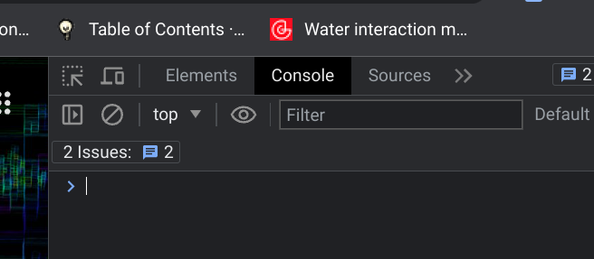

Questa pagina è più interessante se si legge il codice, quindi aprite il file col vostro editor di testo preferito, ma è anche interessante vedre cosa succede in console
Cos'è la console??? La console è uno speciale strumento presente in quasi ogni browser, raggiungibile premendo F12 oppure, per chi avesse tastiere esotiche o non trovasse i tasti "F", cliccando col tasto destro del mouse sulla pagina, e cliccando su qualcosa che somigli a inspect.
Si aprirà una "finestra" sulla sinistra (di solito) con diverse tab selezionabili, in alto. Tra queste dovrebbe trovarsi una tab etichettata console, forse nascosta in un menu accessibile cliccando su una tab con una freccia.
Cliccandola, dovreste vedere diversi messaggi, tutti generati da questa pagina. Quindi lasciate aperta la console e andate a leggere il contenuto di questo file. Questa pagina continua sotto, ma leggete prima il contenuto del file alla riga 160. Ci sarà tempo per tornare qui a leggere.
Ogni linguaggio di programmazione prevede qualche forma (e sintassi, e regola, e "buona pratica"...) per certi concetti più o meno astratti: espressioni, variabili, funzioni, ed altro ancora
Le espressioni (già menzionate nel codice della pagina,s e state leggendo nell'ordine suggerito) sono sequenze di simboli che il nostro computer cercherà di interpretare come istruzioni da eseguire.
Le variabli corrispondono invece alle variabili che usiamo quando facciamo matematica, con qualche piccola differenza, ovviamente. Pensando a come utilizziamo le variabili in un esercizio di matematica, basta scrivere
x = 10
e (dopo aver passato un po' di tempo sui banchi di scuola) capiamo che "esiste" un simbolo x che possiamo sostituire in qualsiasi momento con il valore 10. Scrivere il contrario, ossia 10 = x, sembrerebbe strano ma non sarebbe veramente differente, come significato. In informatica invece si distinguono due fasi, ogni volta che si crea una variabile:
Dichiarazione: avvisiamo il computer che una variabile esiste, e...
Assegnamento: diciamo al computer che valore è contenuto nella variabile
per eseguire queste due "operazioni" esiste una sintassi ben precisa. Rispettivamente:
let x che utilizzia la "parola magica" let, mentre x è il nome che abbiamo scelto per la variabile
x = 10 che corrisponde al modo normale di scrivere... ma attenzione! 10 = x darebbe un errore!
La "parola magica" (più correttamente "riservata") permette al computer di capire che stiamo
definendo una variabile. Viene dall'inglese e si potrebbe tradurre con "diciamo che", o
"facciamo che".
La x è un simbolo, ma potrebbe essere anche una sequenza di simboli, e
siamo liberi di sceglierla come più ci aggrada. Poche le regole da rispettare: non deve
cominciare con un numero, non deve contenere punti, virgole o altri caratteri speciali,
non possiamo dichiarare più di una volta lo stesso nome (come non avrebbe snso scrivere su
un foglio che x=10 e vicino x=5: non avrebbe senso!).
Infine l'uguale e un valore
numerico, cosa che non dà troppo da pensare... ma attenzione: l'uguale informatico è
un assegnamento di valore, e quindi piuttosto che leggerlo come "x è uguale a dieci",
possiamo leggerlo come "il valore dieci viene inserito nella variabile chiamata x". Quindi
una variabile corrisponde abbastanza bene al concetto di un contenitore per valori.
Dichiarazione e assegnamento sono spesso eseguiti in un solo colpo, così:
let x = 10
Ed ora torniamo a leggere il codice di questa pagina nel nostro editor, alla riga 260
Altro concetto comune a tutti i linguaggi di programmazione: le funzioni sono particolarmente importanti ed utili. Ci sono diverse sfumature tra un linguaggio e l'altro, ad esempio alcuni linguaggi accettano una funzione come valore di una variabile mentre altri no (javascript è tra i primi).
Come per le variabili, anche per le funzioni è necessaria un'operazione di dichiarazione, ossia dobbiamo dire al nostro programma che esiste una funzione con un certo nome. Ma dobbiamo anche dichiarare altri cose che a semplici variabili non servirebbero: i parametri e un insieme di istruzioni. Per disinguere un po' dalle variabili, possiamo parlare di definizione di una funzione.
function nome ( parametri ){
istruzioni
}
Per il nome valgono le stesse regole già elencate per le variabili.
I parametri sono un elenco di nomi di variabili, separati da virgole (ma possiamo
avere anche un solo parametro, o nessun parametro). Queste variabili esistono soltanto
dentro le istruzioni della funzione, e quindi possiamo (anche se non è sempre una buona
idea) riutilizzare nomi di varaibile già usati.
Le istruzioni sono una sequenza di istruzioni come avremmo potuto scriverle altrove
nel nostro codice.
Il termine function è una parola riservata, come era il nostr let.
Lo scopo di definire funzioni è quello di avere disponibili sequenze anche complesse di istruzioni, e di poterle ripetere ogni qual volta dovesse servire usando solo il nome della funzione. "Usare" una funzione si dice più propriamente chiamare una funzione, e si può riconoscere facilmente la chiamta di una funzione perchè, per eseguirla, dobbiamo mettere delle parentesi tonde subito dopo il nome della funzione.
Un esempio di come usare le funzioni? Andiamo a leggere "dentro" alla nostra pagina, a riga 297
In chiusura vale lapena anticipare una caratteristica peculiare di javascript, plasmata sulla sua simbiosi con html e css (ricordiamo che si tratta di tre linguaggi di programmazione distinti, anche se javascript è quello dove si possono costruire istruzioni più complesse).
Questa caratteristica è data proprio dall'esistenza di funzioni (che qualcuno ha già definito per noi) che permettono di interagire con gli elementi html della pagina: possiamo selezionarli e riporrli dentro a variabili, possiamo modificarne il contenuto e le caratteristiche, possiamo eliminarli e crearne di nuovi, e tanto altro ancora.
QUESTO ULTIMO PARAGRAFO NON CONTIENE (INIZIALMENTE) QUELLO CHE AVETE LETTO SULLA PAGINA!